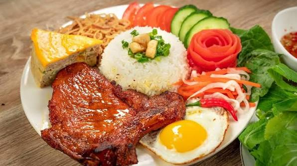

Broken Rice (Com Tam)
A traditional and beloved dish from Southern Vietnam
Southern Vietnam
Introduction
Com Tam, also known as Vietnamese Broken Rice, is one of the most popular dishes in Southern Vietnam, especially in Ho Chi Minh City.
The dish is made from fractured rice grains and traditionally served with grilled pork chops, shredded pork skin, steamed egg meatloaf, fresh vegetables, and fish sauce.
Today, Com Tam is enjoyed throughout Vietnam as a delicious breakfast, lunch, or dinner.
Main Ingredients
Broken Rice
Small fractured rice grains that become soft and fluffy when cooked.
Grilled Pork Chop
Pork marinated with garlic, fish sauce, sugar, and other seasonings before grilling.
Steamed Egg Meatloaf
A savory combination of eggs, minced pork, mushrooms, and glass noodles.
Fish Sauce
A sweet and savory dipping sauce made with fish sauce, sugar, water, and lime.
How Is Com Tam Prepared?
Step 1: Cook the Rice
Wash the broken rice and cook it until the grains become tender and fluffy.
Step 2: Grill the Pork
Marinate the pork chops and grill them until golden brown and fragrant.
Step 3: Serve the Dish
Arrange the rice, pork, egg meatloaf, vegetables, and fish sauce on a plate.
Cultural Significance
Com Tam originated as an affordable meal made from broken rice grains that were once considered less valuable than whole rice.
Over time, it became an iconic Southern Vietnamese specialty, representing the creativity and rich culinary traditions of Vietnamese people.
Keep exploring the flavors of Vietnam.
Explore all dishes